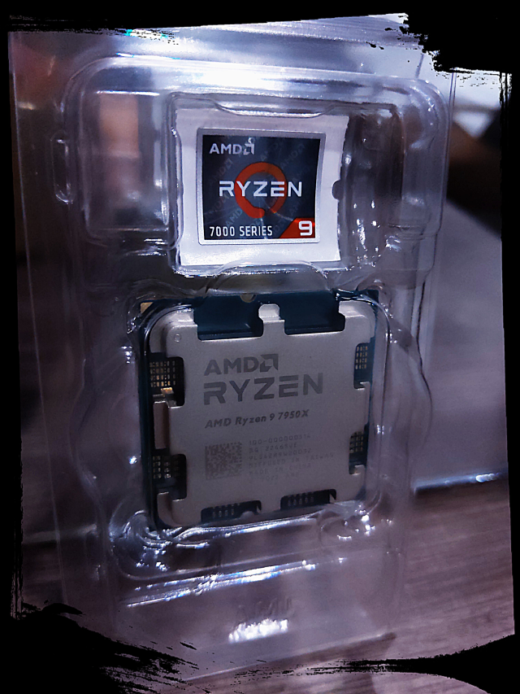
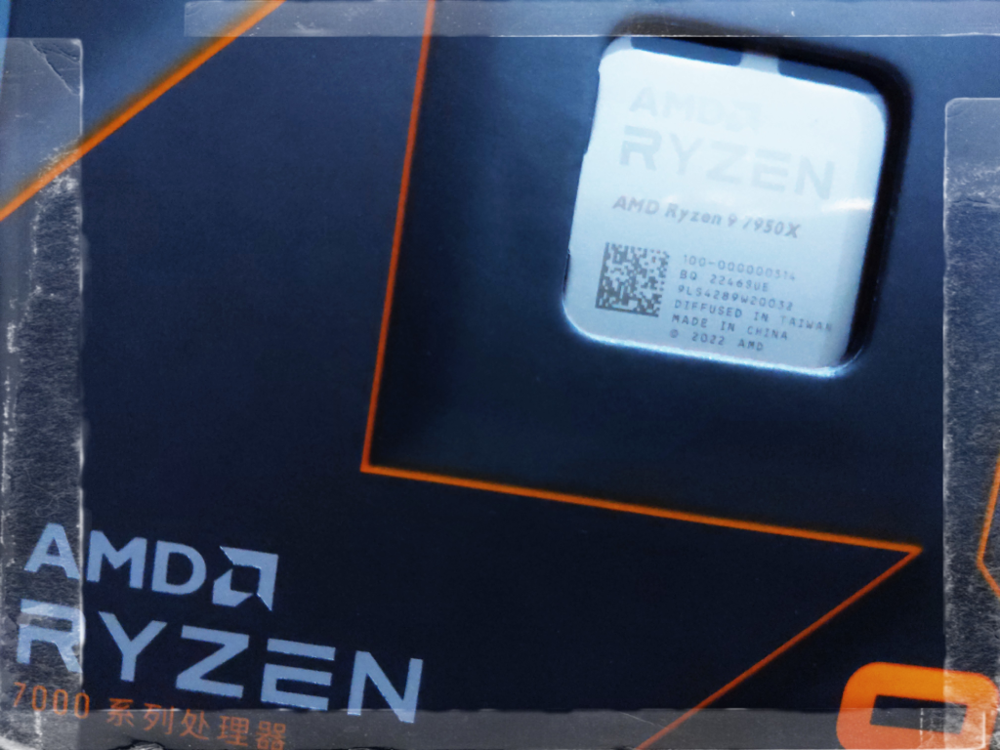
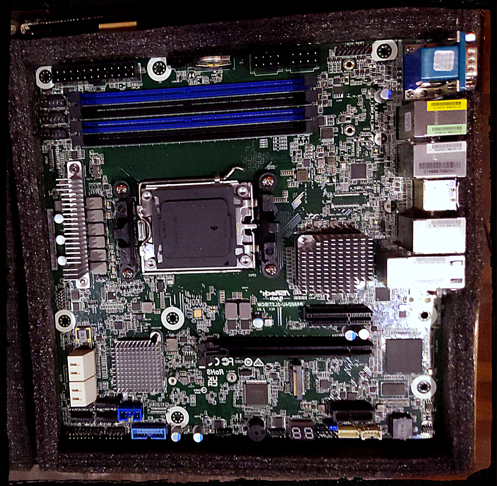
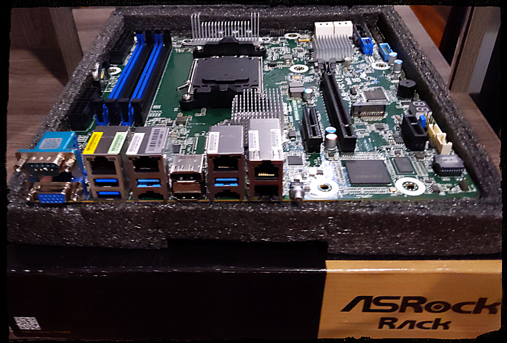

Introduction
At Rotko Networks, our commitment to powering the development and deployment of decentralized applications within the Web3 ecosystem is unwavering. In achieving this, we are dedicated to providing an infrastructure that encapsulates robust hardware, optimized to deliver top-tier performance while ensuring minimal memory latency.
Our approach to building this infrastructure transcends the conventional focus on computational capabilities. We place a similar, if not greater, emphasis on storage solutions, integrating high-speed data access systems that boast minimal latency. Furthermore, we integrate technology that guarantees data integrity, adding another layer of trust to our operations.
Our server's network robustness is another aspect we can't overemphasize. It's equipped with cutting-edge features that ensure seamless, swift, and efficient data transfer. This is a key facet of our system, as it contributes significantly to a smooth, unbroken service for end users.
Recognizing the heavy-duty nature of blockchain operations, we've carefully selected components for our server that not only meet the demand for resource-intensive applications but also have the capacity to exceed these requirements.
In the following sections, we'll delve into the specifics of the hardware that forms the backbone of our infrastructure, discussing their features, capabilities, and the reasons they've been chosen for our server operations.
Join us as we take a detailed look at our server infrastructure, designed and engineered to promote growth and foster innovation in the Web3 ecosystem. Prepare for an insightful journey into the hardware specifics that power Rotko Networks. Stay tuned!
Hardware
Our primary goal is to deliver a high-performance and secure blockchain infrastructure that fosters trust and reliability. We aim to achieve this by focusing on the critical elements of blockchain technology - namely, ensuring high single-thread performance for validator services, and low latency for RPC services, among others.
Validator services in blockchain infrastructures demand high single-thread performance due to the nature of their operations. Validators, in essence, validate transactions and blocks within the blockchain. They act as the arbitrators of the system, ensuring the veracity and accuracy of the information being added to the blockchain. This is an intensive process that involves complex computations and encryption, thus requiring a high-performance, single-thread system to maintain efficiency.
The low latency required for our RPC services is another vital factor in our hardware design. RPC, or Remote Procedure Call, is a protocol that allows a computer program to execute a procedure in another address space, usually on another network, without the programmer needing to explicitly code for this functionality. In simpler terms, it's a way for systems to talk to each other. Low latency in these operations is crucial to ensure a smooth and seamless dialogue between various systems within the blockchain. A delay or a lag in these communications can cause bottlenecks, leading to a slowdown in overall operations.
The hardware components and their configurations we have selected are specifically designed to address these needs. By leveraging advanced technologies like the AMD Ryzen 9 7950X for its superior single-thread performance, DDR5 memory for fast data retrieval, and NVMe SSDs for their exceptional speed in data storage and retrieval, we aim to provide an infrastructure that can effectively handle the demands of blockchain technology.
Our infrastructure is also designed to ensure scalability and flexibility. As the demands of the blockchain ecosystem grow, so too should our capacity to handle these increasing demands. Hence, our hardware design also incorporates elements that will allow us to easily scale up our operations when necessary.
In essence, our hardware is purpose-built to deliver high-performance blockchain operations that are secure, reliable, and capable of scaling with the demands of the evolving blockchain ecosystem.
Rack
At the heart of our operations is a meticulously designed server infrastructure, securely housed within ten units of a top-tier 42U rack. Providing approximately 230 liters of computational capacity, our setup is powered by a robust dual 2kW, 220V power system that underlines our commitment to delivering superior performance and steadfast availability.
Our server infrastructure is hosted within a carrier-neutral facility, strategically enabling seamless and robust connections with a broad range of service providers, ISPs, and cloud platforms. This network versatility fosters enhanced performance and unyielding reliability, thus ensuring a consistently superior user experience.
More than a mere assembly of servers, our setup is a comprehensively designed ecosystem meticulously architected to achieve maximum efficiency. Leveraging location flexibility, our infrastructure can be configured across multiple strategic points to guarantee optimal network connectivity and minimized latency.
Direct peering arrangements with major local and international internet exchanges ensure broad bandwidth and unwavering connectivity. Coupled with floor and inter-floor cross-connect cabling, we have fostered a well-connected network capable of facilitating smooth data transfer between servers and racks.
Our infrastructure is further enhanced with a suite of cutting-edge networking devices, including industry-leading routers and switches. Services such as KVM over IP for remote server management, alongside on-site technical support and smart hands as a service, amplify our operational efficiency.
To guarantee optimal performance and longevity of our hardware, a tightly regulated environment is maintained. Our facility features controlled air temperature and humidity, ensuring the hardware operates within optimal conditions. Additionally, we have installed a UPS and backup power generators to mitigate the risk of power interruptions.
Security is paramount. Our facility, with ISO 27001 certification, employs a rigorous system of access control with logging and video surveillance, ensuring a safe and secure environment for our infrastructure. Additional safety measures such as fire alarms and smoke protection systems are in place to protect our hardware. A dedicated network operations center, operational 24/7, stands ready to promptly address any technical concerns.
Our setup also incorporates a raised floor design, an element that demonstrates our meticulous attention to detail. This design improves air distribution and cable management, leading to thermal efficiency and a well-organized operational environment.
Links
Networking
Bandwidth

Dedicated bandwidth connection, providing up to 200Mbps for international direct land-line and under-sea connections. This service extends all the way to Singapore, ensuring latency below 30ms. This speed is critical for RPC endpoint provider operations, where timely data transfer is a crucial success factor. The provision to scale up our bandwidth capabilities offers us the flexibility to match our growing needs without compromising on the quality of service.
Router

MikroTik Cloud Core Router CCR2004-16G-2S+
The CCR2004 router, part of the illustrious MikroTik series, brings several compelling advantages to the table, ensuring optimal low latency networking and high throughput suitable for our needs.
-
Decent Performance: The router leverages the power of the Annapurna Labs Alpine v2 CPU, which has 4x 64-bit ARMv8-A Cortex-A57 cores. This results in robust single-core performance, a critical factor when managing operations that hinge heavily on per-connection processing.
-
Expansive Bandwidth: The CCR2004 router is well-equipped with 18 wired ports, incorporating 16x Gigabit Ethernet ports and two 10G SFP+ cages, providing abundant bandwidth capacity. This specification enables the router to efficiently manage high data traffic, thus delivering enhanced throughput.
-
Zero Bottlenecks: The unique design of the CCR2004 router ensures no data flow bottlenecks. Each group of 8 Gigabit Ethernet ports is connected to a distinct Marvell Amethyst family switch-chip, each having a separate 10 Gbps full-duplex line to the CPU. This structure ensures all ports can operate at full wire speed, as long as the CPU can handle the processing, ensuring low latency and high throughput.
-
Incredible Single-Core Performance per Watt: The CCR2004 router offers the best single-core performance per watt across all CCR devices. This efficient operation results in higher processing power per unit of energy consumed, handling a more substantial load, thereby offering low latency and high throughput.
-
Reliability and Durability: Encased in a classic white 1U rackmount, the CCR2004 incorporates built-in dual redundant power supplies. This redundancy ensures that even if one power supply falters, the other continues operations, promising uninterrupted service.
BKK01 - Validator
CPU
AMD RYZEN 5 5600G 6-Core 3.7 GHz (4.6 GHz Max Boost) Socket AM4 65W
The heart of our operations, the 6-core AMD RYZEN 5 5600G, offers excellent performance for blockchain applications. It provides robust and reliable service even under demanding workloads.
CPU Cooler
For managing the thermal performance of our CPU, we use the COOLSERVER R64 CPU Cooler. It's equipped with high-quality heatpipes and can handle the Ryzen 5 5600G even under intensive workloads.
RAM
Our setup uses 2 modules of 32GB DDR4 RAM from Hynix, providing us with ample bandwidth and ensuring smooth server operations.
Motherboard
The MSI A520M-ITX/ac motherboard is an engineering marvel that brings together the performance of the consumer world with the dependability of server-grade hardware. This motherboard supports the AMD Ryzen series CPUs and DDR4 memory, promising speed, reliability, and scalability.
Storage
4x 2TB NVME Monster Storage 3D TLC SSD - R:7400Mb/s W:6,600MB/s
For storage, we use 4 Monster Storage 3D TLC NVMe SSDs, each of 2TB capacity. These high-speed SSDs are known for their exceptional performance and efficiency in data storage and retrieval.
Power unit
160W PicoPSU with 12V 10A AC/DC adapter
To power our setup, we use a 160W PicoPSU with a 12V 10A AC/DC adapter. This PSU offers excellent efficiency and durability, and is capable of handling the power demands of our CPU and other components.
Chassis
The entire setup is smartly fitted into a 2U ATX slot of BKK03 server, providing sufficient room for all components and ensuring effective cooling.
BKK02 - Validator 2
CPU
AMD RYZEN 5 5600G 6-Core 3.7 GHz (4.6 GHz Max Boost) Socket AM4 65W
The heart of our operations, the 6-core AMD RYZEN 5 5600G, offers excellent performance for blockchain applications. It provides robust and reliable service even under demanding workloads.
CPU Cooler
For managing the thermal performance of our CPU, we use the COOLSERVER R64 CPU Cooler. It's equipped with high-quality heatpipes and can handle the Ryzen 5 5600G even under intensive workloads.
RAM
Our setup uses 2 modules of 32GB DDR4 RAM from Hynix, providing us with ample bandwidth and ensuring smooth server operations.
Motherboard
The MSI A520M-ITX/ac motherboard is an engineering marvel that brings together the performance of the consumer world with the dependability of server-grade hardware. This motherboard supports the AMD Ryzen series CPUs and DDR4 memory, promising speed, reliability, and scalability.
Storage
4x 2TB NVME Monster Storage 3D TLC SSD - R:7400Mb/s W:6,600MB/s
For storage, we use 4 Monster Storage 3D TLC NVMe SSDs, each of 2TB capacity. These high-speed SSDs are known for their exceptional performance and efficiency in data storage and retrieval. Downside is that lacks DRAM for caching.
Power unit
160W PicoPSU with 12V 10A AC/DC adapter
To power our setup, we use a 160W PicoPSU with a 12V 10A AC/DC adapter. This PSU offers excellent efficiency and durability, and is capable of handling the power demands of our CPU and other components.
Chassis
The entire setup is smartly fitted into a 2U ATX slot of BKK03 server, providing sufficient room for all components and ensuring effective cooling.
BKK03
CPU
 AMD Ryzen 9 7950X R9 7950X CPU Processor 16-Core 32-Thread 5NM L3=64M Socket AM5
At the core of our server operations sits the impressive AMD Ryzen 9 7950X. With a 16-core, it's tailored to manage multiple tasks with ease - enabling multiple networks to be run simultaneously. The high core clock speeds are paramount in blockchain applications, enabling efficient sync of chains and reliable endpoint service.
Supporting cutting-edge PCI Express® 5.0 and DDR5 memory technologies, this CPU ensures rapid data transfer and retrieval - essential for efficient and low latency blockchain transactions. Its large 64MB L3 cache further enhances performance by allowing quick access to frequently used data.
The Ryzen 9 7950X excels in cryptographic operations, crucial for blockchain processing. Benchmarking at 1.59 GiBs in BLAKE2-256 and 822.88 KiBs in SR25519-Verify, it comfortably outperforms Polkadot's stringent requirements, reinforcing its suitability for our blockchain-centric operations.
CPU Cooler
COOLSERVER R64 AM5 Server CPU Cooler
The COOLSERVER R64 AM5 Server CPU Cooler, with its 4 high-quality heatpipes and 150W TDP, is perfectly equipped to handle the thermal output of our Ryzen 9 7950X, even under intensive blockchain workloads. Its robust double ball bearing design ensures longevity and reliability in our 24/7 server operations, while the 4-pin PWM fan offers energy-efficient, adaptive cooling.
Temporary cooler
TDP95W for 1U server 27mm height 1UA27
High-quality construction, individual wireless induction connection for each fan, and the ability to support up to 95 Watts of heat dissipation. This is currently temporary solution until 2U TDP150W cooler arrives.
Motherboard
 AsRock Rack B650D4U-2L2T/BCM(LGA 1718) Dual 10G LAN
This motherboard is a masterpiece of engineering and design, a testament to AsRock's ability to merge the high-performance aspects of the consumer world with the robustness and dependability of server-grade hardware. The Rack B650D4U-2L2T is a Micro-ATX motherboard that fully supports DDR5 ECC UDIMM memories, a feature that provides increased data integrity and system reliability - essential elements in server environments.
Its dual 10G LAN functionality makes it an excellent choice for environments with high network traffic. This not only ensures swift and efficient data transfer but also minimizes latency, providing a smooth, unbroken service for end users.
The motherboard comes with full PCIe 5.0 support, which is crucial for tackling demanding tasks and ensuring optimal performance. It features an M.2 slot, a x16 slot, and a x4 slot, which provides the flexibility to cater to various expansion needs. With the ability to support up to 7 M.2 slots, the Rack B650D4U-2L2T is well-suited for high-performance NVMe storage, significantly boosting data access and transfer speeds.
In essence, the AsRock Rack B650D4U-2L2T is an optimal choice that promises a perfect blend of speed, reliability, and scalability, capable of serving the demanding needs of modern server applications.
Memory
4x Server Memory Module|MICRON|DDR5|32GB|UDIMM/ECC|4800MHz|CL 40|1.1V|MTC20C2085S1EC48BA1R
Our server setup employs four modules of 32GB DDR5 server memory. These memory modules ensure substantial bandwidth, which is paramount in maintaining smooth and efficient server operations. Furthermore, these memory modules come equipped with ECC (Error-Correcting Code) technology, an invaluable feature that ensures the accuracy and integrity of data, a critical aspect in preserving the trustworthiness of our transactions and operations.
In high-performance computing, latency is as crucial as speed. Lower latency leads to faster data processing, resulting in more efficient and responsive system performance. Our memory modules have demonstrated impressive low-latency performance in our extensive testing.
Test results
|----------+----------------+-------------+-------------+-------------------|
| Memory | Copy | 22.24 GiBs | 14.32 GiBs | ✅ Pass (155.3 %) |
|----------+----------------+-------------+-------------+-------------------|
These results speak volumes about the high-quality performance offered by our chosen memory modules. Their low latency will ensure that data is processed rapidly and efficiently, contributing to the overall performance and responsiveness of our server.
SSD Expansion Cards
NVMe SSD Expansion Card NVMe PCIe RAID Adapter 4 Ports NVME SSD To PCI-E 4.0 X16 Expansion Card
Our selection of this SSD expansion card is an integral part of our data management strategy. The card facilitates the incorporation of state-of-the-art NVMe SSDs, which are renowned for their superlative speed and efficiency in storage and data retrieval. By enabling faster access to stored data, this card aids in optimizing overall system performance, significantly enhancing our server's responsiveness.
Storage
6x 2TB Hanye ME70 NVMe PCI-E4.0 7200mb/s
Our system utilizes six 2TB High Performance ME70 M.2 NVMe SSDs, offering a total of 12TB high-speed storage, tailored for professionals needing quick data access and load times. Utilizing Gen4 PCIe tech, these SSDs deliver sequential read speeds of 7200 MB/s, combined with a powerful error correction algorithm, LDPC (Low Density Parity Check), and DRAM cache for improved response times and data integrity - making them an essential asset in our high-demand network operations.
Test results with 3 cards
|----------+----------------+-------------+-------------+-------------------|
| Disk | Seq Write | 2.56 GiBs | 450.00 MiBs | ✅ Pass (582.0 %) |
|----------+----------------+-------------+-------------+-------------------|
| Disk | Rnd Write | 1.05 GiBs | 200.00 MiBs | ✅ Pass (535.3 %) |
+----------+----------------+-------------+-------------+-------------------+
IOPS 745388.087064 99.99th Percentile Read Latency: 310 ns
Backup storage
Our motherboard has 4x SATA3 slots for hard disks. We could partition small L2ARC cache section out of nvme disk and setup 4x16TB hard disks for backups for 800e price range providing us RAIDZ1 48TB backup space for weekly archive backups.
Chassis
We are still in process of designing correct parts for a 1U chassis build, so for the first build we decided to go for 550mm 2U chassis. The challenge of fitting Micro-ATX with ricers to PCI-E x16 and PCI-E x4 as well as 170W TDP cooling solution into 1U is not that trivial. These slots are really required to provide low latency NVME storage for RPC nodes.
TGC-24550-3.0 chassis, a 2U rackmount model providing ample space and versatility. It has an efficient airflow design, with a middle fan wall of four 80mm fans. This setup ensures steady airflow across essential components, effectively mitigating thermal issues under heavy loads.
Power Supply Unit
T.F.SKYWINDINTL 1U MINI Flex ATX Power Supply Unit 400W Modular PSU
Power supply unit is the T.F.SKYWINDINTL 1U MINI Flex ATX 400W PSU. This efficient unit comes equipped with a built-in cooling fan and a comprehensive range of protective measures, including overcurrent, overvoltage, and short-circuit protection. These features augment the stability and dependability of our server system.
The AMD Ryzen 9 7950X, with its Thermal Design Power (TDP) of 170W and peak power consumption of 230W for the AM5 socket, requires a resilient and reliable power supply unit. Given that the PSU is ideally operated at approximately 50% of its maximum capacity during full load for optimum efficiency and durability. Rated at 350W, this PSU will operate within its most effective efficiency zone while sufficiently catering to the power demands of the processor.
KVM
BliKVM CM4 "KVM over IP" Raspberry Pi CM4 HDMI CSI PiKVM v3
A modern, highly secure, and programmable KVM solution running on Arch Linux, which provides exceptional control over your server, akin to physical access. With an easy build process, it boasts minimal video latency (about 100 ms) and a lightweight Web UI accessible from any browser. It emulates mass storage drives and allows ATX power management, secure data transmission with SSL, and local Raspberry Pi health monitoring. You can also manage GPIO and USB relays via its web interface. The PiKVM OS is production-ready, supports a read-only filesystem to prevent memory card damage, offers extensible authorization methods, and enables automation with macros.
Features of PiKVM:
- Fully-featured and modern IP-KVM: PiKVM is up-to-date with the latest KVM technologies.
- Easy to build: PiKVM offers ready-to-use OS images and a friendly build environment.
- Low video latency: With approximately 100 milliseconds of video latency, it provides one of the smallest delays of all existing solutions.
- Lightweight Web UI and VNC: The user interface is accessible through any browser, with no proprietary clients required. VNC is also supported.
- Mass Storage Drive Emulation: On Raspberry Pi 4 and ZeroW, PiKVM can emulate a virtual CD-ROM or Flash Drive. A live image can be uploaded to boot the attached server.
- ATX power management: PiKVM supports simple circuits for controlling the power button of the attached server.
- Security: PiKVM is designed with strong security, using SSL to protect traffic.
- Local monitoring: PiKVM monitors the health of the Raspberry Pi board and provides warnings for potential issues.
- GPIO management: Control GPIO and USB relays via the web interface.
- Production-ready: PiKVM OS is based on Arch Linux ARM and can be customized for any needs.
- Read-only filesystem: The OS runs in read-only mode to prevent damage to the memory card due to a sudden power outage.
- Extensible authorization methods: PiKVM supports integration into existing authentication infrastructure.
- Macro scripts: Repetitive actions can be automated with keyboard & mouse action macros.
- Open & free: PiKVM is open-source software, released under the GPLv3.
Links
BKK04
Energy Consumption and Carbon Offset
- Energy Consumption
Energy consumption is a crucial aspect of our operations, especially concerning our server infrastructure. This energy powers everything from the cooling systems that keep our servers at optimal temperatures, to the computational processes that enable our systems to run.
We have strategically chosen to utilize low TDP processors for our server rack to maximize energy efficiency. Our server rack comprises 2x AMD Ryzen 5600G processors, 1x AMD Ryzen 5950X (170W TDP), and 1x AMD Ryzen 5950X3D (120W TDP). This processor selection provides an excellent performance-to-power ratio and fits within the power limit of our 4kWh server rack.
Given these processors are running at full load 24/7, the total monthly energy consumption can be estimated as follows:
Total Power: 2 * 65W (5600G) + 170W (5950X) + 120W (5950X3D) = 420W Conversion to kW: 420W / 1,000 = 0.42 kW Monthly Energy Consumption: 0.42 kW * 24 hours/day * 30 days/month = 302.4 kWh Given Thailand's average emissions factor from 2021 of about 0.55 kg CO2e per kWh, this monthly energy consumption translates to roughly 166.32 kg CO2e, or about 0.166 metric tons (mt) of CO2e.
Please note that these figures are estimates and the actual energy consumption and carbon emissions may vary depending on the actual server load and the current energy mix of the grid.
- Carbon Offset
To counterbalance the environmental impact of our energy consumption, we are committed to minimizing and offsetting our carbon emissions. We have chosen to offset our carbon emissions through a monthly subscription with TerraPass.
TerraPass offers Renewable Energy Certificates (RECs) which contribute towards clean energy projects like wind and solar farms. By purchasing these RECs, we balance the carbon footprint of our monthly electricity use.
TerraPass's project portfolio includes Landfill Gas Capture, Farm Power, Clean Energy from Wind Farms, and Abandoned Coal Mine Methane projects. The offsets from these projects are registered under the Climate Action Reserve (CAR) or Verified Carbon Standard (VCS), ensuring transparency and quality.
The funds collected through our monthly subscription will be directed to these projects, contributing to a reduction in greenhouse gas emissions and supporting the generation of renewable energy.
- Moving Forward Our commitment to transparency and accountability in our climate actions involves regular monitoring, measurement, and reporting on our energy usage and carbon emissions. We are dedicated to continuously exploring and implementing strategies to reduce our environmental impact and providing updates about our carbon offset initiatives to our stakeholders.
Our aim goes beyond merely offsetting our carbon emissions. We are driven to build a sustainable and resilient organization that contributes positively to our planet and society. Our actions today set the stage for a more sustainable future and we are proud to be part of the solution to climate change.Energy Consumption and Carbon Offset
- Energy Consumption Energy consumption is a crucial aspect of our operations, especially concerning our server infrastructure. This energy powers everything from the cooling systems that keep our servers at optimal temperatures, to the computational processes that enable our systems to run.
We have strategically chosen to utilize low TDP processors for our server rack to maximize energy efficiency. Our server rack comprises 2x AMD Ryzen 5600G processors, 1x AMD Ryzen 5950X (170W TDP), and 1x AMD Ryzen 5950X3D (120W TDP). This processor selection provides an excellent performance-to-power ratio and fits within the power limit of our 4kWh server rack.
Given these processors are running at full load 24/7, the total monthly energy consumption can be estimated as follows:
Total Power: 2 * 65W (5600G) + 170W (5950X) + 120W (5950X3D) = 420W Conversion to kW: 420W / 1,000 = 0.42 kW Monthly Energy Consumption: 0.42 kW * 24 hours/day * 30 days/month = 302.4 kWh Given Thailand's average emissions factor from 2021 of about 0.55 kg CO2e per kWh, this monthly energy consumption translates to roughly 166.32 kg CO2e, or about 0.166 metric tons (mt) of CO2e.
Please note that these figures are estimates and the actual energy consumption and carbon emissions may vary depending on the actual server load and the current energy mix of the grid.
- Carbon Offset
To counterbalance the environmental impact of our energy consumption, we are committed to minimizing and offsetting our carbon emissions. We have chosen to offset our carbon emissions through a monthly subscription with TerraPass.
TerraPass offers Renewable Energy Certificates (RECs) which contribute towards clean energy projects like wind and solar farms. By purchasing these RECs, we balance the carbon footprint of our monthly electricity use.
TerraPass's project portfolio includes Landfill Gas Capture, Farm Power, Clean Energy from Wind Farms, and Abandoned Coal Mine Methane projects. The offsets from these projects are registered under the Climate Action Reserve (CAR) or Verified Carbon Standard (VCS), ensuring transparency and quality.
The funds collected through our monthly subscription will be directed to these projects, contributing to a reduction in greenhouse gas emissions and supporting the generation of renewable energy.
- Moving Forward
Our commitment to transparency and accountability in our climate actions involves regular monitoring, measurement, and reporting on our energy usage and carbon emissions. We are dedicated to continuously exploring and implementing strategies to reduce our environmental impact and providing updates about our carbon offset initiatives to our stakeholders.
Our aim goes beyond merely offsetting our carbon emissions. We are driven to build a sustainable and resilient organization that contributes positively to our planet and society. Our actions today set the stage for a more sustainable future and we are proud to be part of the solution to climate change.
- Carbon Offset Plan
We understand that achieving sustainability and minimizing our environmental footprint involves more than just reducing our energy consumption. It also requires active measures to offset the carbon emissions we do produce. To this end, we've chosen to partner with TerraPass to implement an effective carbon offsetting strategy.
Taking into account our estimated monthly emissions of 0.166 metric tons (mt) of CO2e, we've decided to go above and beyond in our commitment to sustainability. We have opted for TerraPass's Renewable Energy Certificates (RECs) monthly subscription, specifically their 1 MWh/month plan.
This plan costs £12.00 per MWh per month and the funds collected are directed towards supporting clean energy projects like wind and solar farms. By choosing this plan, we are not only offsetting our emissions but also actively supporting the development and utilization of renewable energy.
By subscribing to this plan, we are effectively offsetting more carbon emissions than we produce, a strategy known as 'over-offsetting'. The decision to 'over-offset' aligns with our commitment to being a positive force for environmental change and goes above and beyond our responsibility to simply neutralize our carbon footprint.
We believe this proactive approach to carbon offsetting sends a strong message about our dedication to sustainability. It's not just about doing less harm, but about doing more good, and taking concrete steps to foster a healthier planet. We are not only committed to offsetting the carbon emissions from our operations, but also to contributing positively to the environment and the ongoing transition to renewable energy.
Software Infrastructure
Our infrastructure leverages several powerful technologies and platforms to provide a robust and efficient environment for our operations.
Debian
Our servers run on Debian, a highly stable and reliable Linux-based operating system. Debian provides a strong foundation for our operations, with its wide array of packages, excellent package management system, and strong community support. Its stability and robustness make it an excellent choice for our server environments.
Proxmox Virtual Environment
We utilize Proxmox, an open-source server virtualization management solution. Proxmox allows us to manage virtual machines, containers, storage, virtualized networks, and HA clustering from a single, integrated platform. This is crucial in ensuring we have maximum control and efficiency in managing our various server processes. We utilize linux 6.1 lts pve kernel.
LXC (Linux Containers)
We leverage LXC (Linux Containers) to run multiple isolated Linux systems (containers) on a single host. This containerization technology provides us with lightweight, secure, and performant alternatives to full machine virtualization.
ZFS
ZFS, the Zettabyte File System, is an advanced filesystem and logical volume manager. It was designed to overcome many of the major issues found in previous designs and is used for storing data in our Proxmox environment. It provides robust data protection, supporting high storage capacities and efficient data compression, and allows us to create snapshots and clones of our filesystem.
Ansible
We use Ansible for automation of our system configuration and management tasks. Ansible enables us to define and deploy consistent configurations across multiple servers, and automate routine maintenance tasks, thus increasing efficiency and reducing the risk of errors.
MikroTik RouterOS
Our network infrastructure relies on MikroTik RouterOS, a robust network operating system. This system offers a variety of features such as routing, firewall, bandwidth management, wireless access point, backhaul link, hotspot gateway, VPN server, and more. This helps us ensure secure, efficient, and reliable network operations.
All these technologies are intertwined, working together to support our operations. They are chosen not just for their individual capabilities, but also for their compatibility and interoperability, creating an integrated, efficient, and reliable software infrastructure.
Filesystem
The file system is perhaps the most underappreciated component in the blockchain synchronization process, despite being pivotal. It's puzzling how little attention this crucial element receives. Try seeking a single article discussing the ideal record sizes for blockchain databases - you'll quickly discover the dearth of literature on this subject. By offloading additional tasks to the application users, we inadvertently make chains more difficult to synchronize, an outcome that inadvertently centralizes those running the nodes.
Upon rigorous testing of various file systems - including mdraid (ext4), LVM, mdraid, Btrfs, and ZFS - our findings suggest that ZFS stands out as the most user-friendly and well-rounded solution. While LVM and Btrfs also has its merits, its user interface tooling design seems to be more suitable for those with a high tolerance for complexity.
ZFS
ZFS offers incredibly easy client tool to use for setting up complex filesystem setup with snapshots and quota management.
We propose following settings in general for blockchains with variation in recordsize:
# Create the pool (replace tank and device with your pool name and device path)
zpool create -o ashift=12 tank device /dev/nvme0to5
# Set the primary cache to only metadata, as ParityDb relies on the OS page cache
zfs set primarycache=metadata tank
# Set recordsize to 16K as most values in the ParityDb are small and values over 16K are rare
zfs set recordsize=16K tank
# Enable compression as it can provide both space and performance benefits
zfs set compression=lz4 tank
# Disable access time (atime) as it can negatively impact performance
zfs set atime=off tank
# Set redundant metadata to most to protect against data corruption
zfs set redundant_metadata=most tank
# Synchronous writes (sync) should be set to standard to ensure data integrity in case of an unexpected shutdown
zfs set sync=standard tank
# Given that we are prioritizing latency, leave logbias at its default setting (latency)
zfs set logbias=latency tank
# Enable snapshots for better data protection
# TODO: Set up daily with cron
zfs snapshot tank@daily
The NVMe drives themselves should provide high performance and low latency for your ZFS pool, and a separate ZIL or L2ARC might not provide significant benefits and could even add unnecessary complexity or costs.
Notice that if you running EVM blockchain with small blocks like Ethereum, it might be best option to set your recordsize 4K instead before starting syncing.
Ansible
Virtualization
Validator as a Service
Secure key management
Within the Polkadot/Substrate ecosystem, the solution to this complex issue has been the introduction of a trinity of keys different keypairs a trinity of keys: stash, controller, and session keys. This innovative design permits validators to operate securely without exposing their actual wallet keys on the internet.
Instead, the controller wallet provides the Polkadot client with the authority to generate session keys, dedicated exclusively for conducting blockchain validation tasks. A significant advantage of this architecture is its dynamic nature, enabling easy key rotation through a straightforward authorship_rotateKeys RPC call.
The Role of Trusted Execution Environments
To fortify this system, one could consider implementing a Trusted Execution Environment (TEE) or secure enclave that can conduct automatic integrity tests. If attestation fails, keys can be rotated and the validation process paused, thereby protecting the security and integrity of the overall system. However, the practical implementation of such a solution comes with its own set of complexities and challenges.
While TEEs and secure enclaves provide an attractive prospect due to their ability to securely isolate and process sensitive data, they are not immune to threats. Side-channel attacks, in particular, can pose significant risks in a decentralized network where trust is distributed across numerous nodes.
Learning from Tendermint's Key Management System
The Tendermint KMS (Key Management System) is a notable example of an alternate approach to key management, which provides some valuable insights. Tendermint KMS is specifically designed for Tendermint applications like Cosmos Validators and offers high-availability access to validator signing keys, double-signing prevention, and optional hardware security module storage for validator keys.
It is crucial to note that while the Tendermint KMS approach may not be directly applicable to the Polkadot/Substrate ecosystem due to differences in system design, the principles and techniques it employs can offer valuable lessons. For example, adopting strategies for high-availability access and double-signing prevention could potentially enhance Polkadot's key management framework.
YubiKey's HSM2: A Potential Game Changer
The introduction of YubiKey's HSM2 module offers a significant leap forward in secure key management. As the world's smallest Hardware Security Module (HSM), it provides robust security solutions that traditional, larger HSMs struggle to deliver. It strengthens the protection of cryptographic keys, providing secure generation, storage, and management of digital keys. With support for PKCS#11, the HSM2 integrates quickly with hardware-backed security, providing a comprehensive open-source toolbox for cryptographic operations.
By leveraging the security advantages of the YubiKey's HSM2 module and the strategic insights provided by systems like Tendermint KMS, we can navigate the complexities of secure key management in Validator as a Service. These approaches allow us to bolster security, provide a cost-effective solution, and reinforce key management in the face of the unique challenges posed by a decentralized network.
Solution
Ideally, the controller key, which allows the assignment of session keys, would be stored and managed by the HSM. This is an important aspect of maintaining security in the Polkadot/Substrate system. Here's how it would work:
Key Generation: The controller key, like other keys, would be generated within the secure confines of the HSM. This guarantees the randomness of the key and the security of the key generation process.
Key Storage: Once generated, the controller key would remain inside the HSM. This means it cannot be extracted or accessed directly, adding an additional layer of security.
Key Usage: Whenever the controller key needs to be used, for instance, to generate or assign session keys, the operation is performed within the HSM. This ensures that the key material never leaves the HSM, thereby maintaining the integrity and confidentiality of the key.
Key Rotation: The HSM allows for secure key rotation. Regularly changing the controller key enhances the security of the system, making it more resilient to potential attacks.
Managing the controller key within the HSM not only enhances security but also simplifies key management. It streamlines the process of assigning session keys and makes the process more secure by reducing the exposure of key material to potential threats.
Team

Tommi is a symbol of the generation that mastered the qwerty keyboard even before grasping the intricacies of handwriting. With over 20 years of experience in building hardware, software, and managing servers during the early stages of the internet, he demonstrates an exceptional commitment to the digital world.
Tommi's journey with Bitcoin started as early as 2008. He ran the first version of Bitcoin on a Pentium D950 computer, only to lose the digital keys within a few months. This experience gave him a first-hand insight into the workings of the novel digital currency.
However, it wasn't until 2013, when Snowden's revelations and the growing influence of anonymous online marketplaces came to light, that Tommi fully grasped the importance of Bitcoin's proposition. The internet, once thought of as a user-driven landscape, had allowed a mere ten companies to gain majority control, leading to concerns about mass surveillance.
This eye-opening realization led to the creation of Rotko Network. This initiative is based on the principle of creating an internet that is shaped by its users, rather than dominated by a few profit-driven corporations. With the dedication of a software enthusiast and the heart of a freedom-fighter, standing at the helm of this mission. He is dedicated to end the data slavery and reshaping the internet into a space that truly belongs to its users. wq!